← Start Now! — Meditation and Spiritual Exercises
Living the Year Spiritually
Learn this chapter through its own lessons, then compare the relevant source passages.
PDF 113–173 · 6 teaching lessons
Five morning and evening meditations
Choose a paired daily verse rather than gather every formula into one sitting.
Six months, eight processes and seven weeks
Distinguish the chapter’s different schedules.
The seven planetary moods
Understand a complete weekday cycle in its original timing.
Twelve moods and monthly virtues
Distinguish two different twelvefold practices.
The Calendar: a whole year of weekly verses
Continue beyond the four introductory examples.
Christmas, solstice and Isis-Sophia
Read festival verses with their own spiritual setting.
Practice texts and source reader
These are selected source pages from this chapter, including its longer practice texts. The original English page is the reference for uncertain wording or layout. The OCR transcription may contain errors and is not a newly verified edition. Open a source image at full size to read its details.
Source PDF position 113 · English
Open the original source page at full size

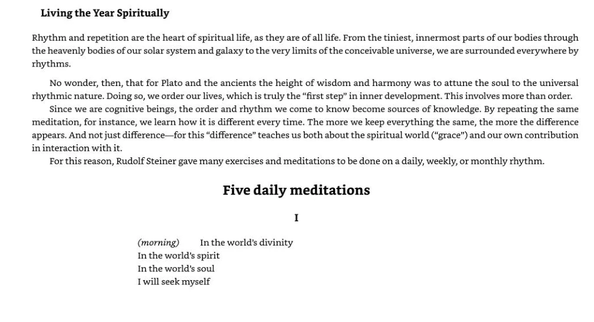
Read the searchable source transcription
Living the Year Spiritually
Rhythm and repetition are the heart of spiritual life, as they are of all life. From the tiniest, innermost parts of our bodies through the heavenly bodies of our solar system and galaxy to the very limits of the conceivable universe, we are surrounded everywhere by rhythms.
No wonder, then, that for Plato and the ancients the height of wisdom and harmony was to attune the soul to the universal rhythmic nature. Doing so, we order our lives, which is truly the “first step” in inner development. This involves more than order.
Since we are cognitive beings, the order and rhythm we come to know become sources of knowledge. By repeating the same meditation, for instance, we learn how it is different every time. The more we keep everything the same, the more the difference appears. And not just difference—for this “difference” teaches us both about the spiritual world (“grace”) and our own contribution in interaction with it.
For this reason, Rudolf Steiner gave many exercises and meditations to be done on a daily, weekly, or monthly rhythm.
## Five daily meditations
I
(morning)
In the world’s divinity
In the world’s spirit
In the world’s soul
I will seek myselfSource PDF position 114 · English
Open the original source page at full size

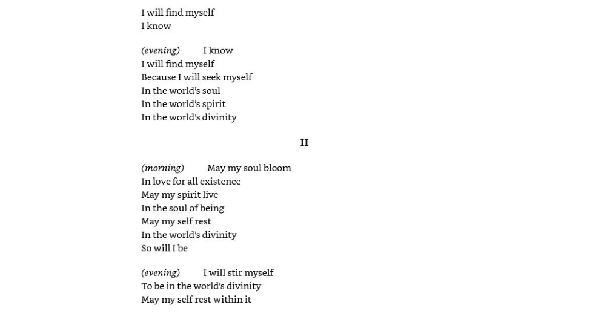
Read the searchable source transcription
I will find myself I know
(evening)
I know
I will find myself
Because | will seek myself In the world’s soul
In the world’s spirit
In the world’s divinity
(morning)
May my soul bloom
In love for all existence
May my spirit live
In the soul of being
May my self rest
In the world’s divinity
So will I be
(evening)
I will stir myself
To be in the world’s divinity May my self rest within it
IlSource PDF position 115 · English
Open the original source page at full size

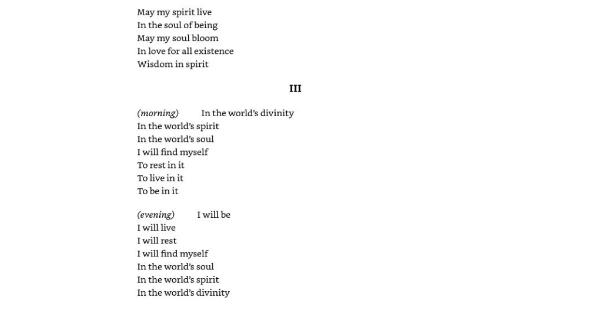
Read the searchable source transcription
May my spirit live
In the soul of being May my soul bloom
In love for all existence
Wisdom in spirit
Ill
(morning)
In the world’s divinity
In the world’s spirit
In the world’s soul
I will find myself
To rest in it
To live in it
To be init
(evening) I will live
I will be
I will rest
I will find myself
In the world’s soul
In the world’s spirit
In the world’s divinitySource PDF position 116 · English
Open the original source page at full size

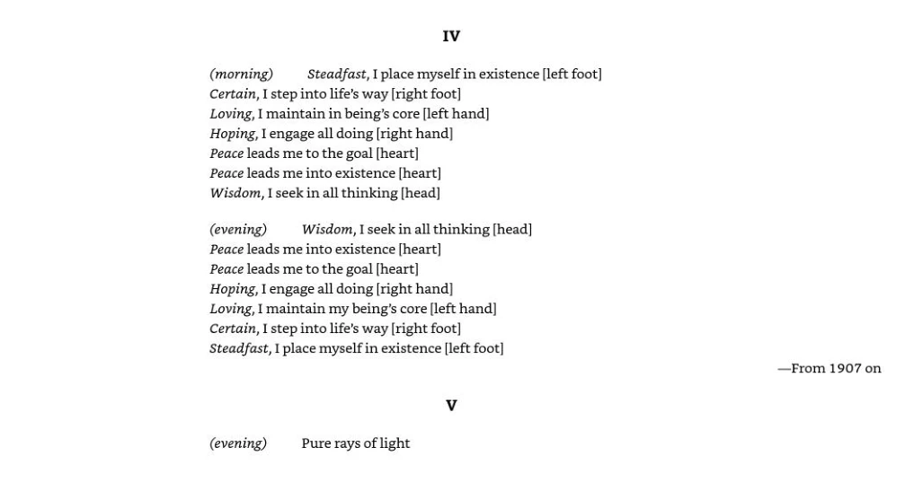
Read the searchable source transcription
IV
(morning)
Steadfast, I place myself in existence [left foot]
Certain, I step into life’s way [right foot]
Loving, I maintain in being’s core [left hand]
Hoping, | engage all doing [right hand]
Peace leads me to the goal [heart]
Peace leads me into existence [heart]
Wisdom, | seek in all thinking [head]
(evening)
Wisdom, | seek in all thinking [head]
Peace leads me into existence [heart]
Peace leads me to the goal [heart]
Hoping, | engage all doing [right hand]
Loving, I maintain my being’s core [left hand] Certain, I step into life’s way [right foot]
Steadfast, | place myself in existence [left foot]
(evening)
Pure rays of light
Vv
—From 1907 onSource PDF position 117 · English
Open the original source page at full size

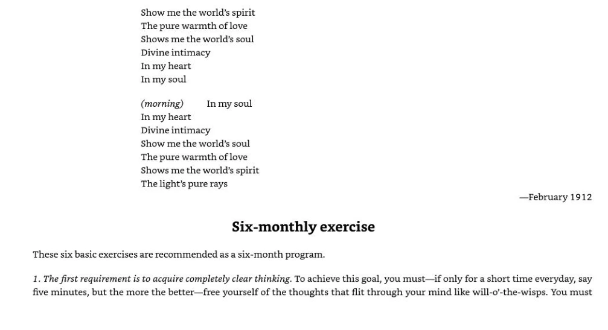
Read the searchable source transcription
Show me the world’s spirit The pure warmth of love Shows me the world’s soul
Divine intimacy
In my heart
In my soul
(morning) In my heart
In my soul
Divine intimacy Show me the world’s soul
The pure warmth of love Shows me the world’s spirit The light’s pure rays
—February 1912
## Six-monthly exercise
These six basic exercises are recommended as a six-month program.
1. The first requirement is to acquire completely clear thinking. To achieve this goal, you must—if only for a short time everyday, say
five minutes, but the more the better—free yourself of the thoughts that flit through your mind like will-o’-the-wisps. You mustSource PDF position 118 · English
Open the original source page at full size

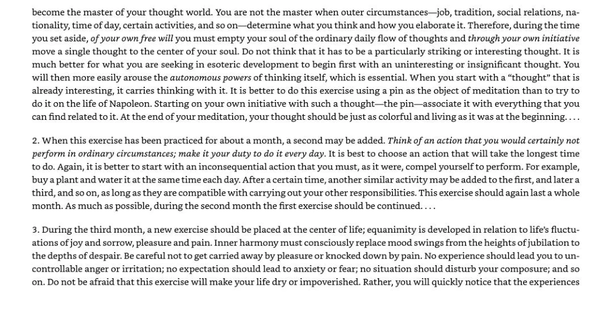
Read the searchable source transcription
become the master of your thought world. You are not the master when outer circumstances—job, tradition, social relations, nationality, time of day, certain activities, and so on—determine what you think and how you elaborate it. Therefore, during the time you set aside, of your own free will you must empty your soul of the ordinary daily flow of thoughts and through your own initiative move a single thought to the center of your soul. Do not think that it has to be a particularly striking or interesting thought. It is much better for what you are seeking in esoteric development to begin first with an uninteresting or insignificant thought. You will then more easily arouse the autonomous powers of thinking itself, which is essential. When you start with a “thought” that is already interesting, it carries thinking with it. It is better to do this exercise using a pin as the object of meditation than to try to do it on the life of Napoleon. Starting on your own initiative with such a thought—the pin—associate it with everything that you can find related to it. At the end of your meditation, your thought should be just as colorful and living as it was at the beginning. ...
2. When this exercise has been practiced for about a month, a second may be added. Think of an action that you would certainly not
perform in ordinary circumstances; make it your duty to do it every day. It is best to choose an action that will take the longest time to do. Again, it is better to start with an inconsequential action that you must, as it were, compel yourself to perform. For example, buy a plant and water it at the same time each day. After a certain time, another similar activity may be added to the first, and later a third, and so on, as long as they are compatible with carrying out your other responsibilities. This exercise should again last a whole month. As much as possible, during the second month the first exercise should be continued. . ..
3. During the third month, a new exercise should be placed at the center of life; equanimity is developed in relation to life's fluctu-
ations of joy and sorrow, pleasure and pain. Inner harmony must consciously replace mood swings from the heights of jubilation to the depths of despair. Be careful not to get carried away by pleasure or knocked down by pain. No experience should lead you to uncontrollable anger or irritation; no expectation should lead to anxiety or fear; no situation should disturb your composure; and so on. Do not be afraid that this exercise will make your life dry or impoverished. Rather, you will quickly notice that the experiencesSource PDF position 119 · English
Open the original source page at full size

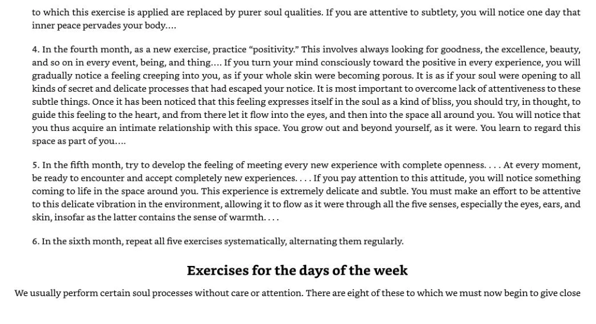
Read the searchable source transcription
to which this exercise is applied are replaced by purer soul qualities. If you are attentive to subtlety, you will notice one day that inner peace pervades your body....
4. In the fourth month, as a new exercise, practice “positivity.” This involves always looking for goodness, the excellence, beauty,
and so on in every event, being, and thing.... If you turn your mind consciously toward the positive in every experience, you will gradually notice a feeling creeping into you, as if your whole skin were becoming porous. It is as if your soul were opening to all kinds of secret and delicate processes that had escaped your notice. It is most important to overcome lack of attentiveness to these subtle things. Once it has been noticed that this feeling expresses itself in the soul as a kind of bliss, you should try, in thought, to guide this feeling to the heart, and from there let it flow into the eyes, and then into the space all around you. You will notice that you thus acquire an intimate relationship with this space. You grow out and beyond yourself, as it were. You learn to regard this space as part of you....
5. In the fifth month, try to develop the feeling of meeting every new experience with complete openness. ... At every moment,
be ready to encounter and accept completely new experiences. . . . If you pay attention to this attitude, you will notice something coming to life in the space around you. This experience is extremely delicate and subtle. You must make an effort to be attentive to this delicate vibration in the environment, allowing it to flow as it were through all the five senses, especially the eyes, ears, and skin, insofar as the latter contains the sense of warmth....
6. In the sixth month, repeat all five exercises systematically, alternating them regularly.
## Exercises for the days of the week
We usually perform certain soul processes without care or attention. There are eight of these to which we must now begin to give closeSource PDF position 120 · English
Open the original source page at full size

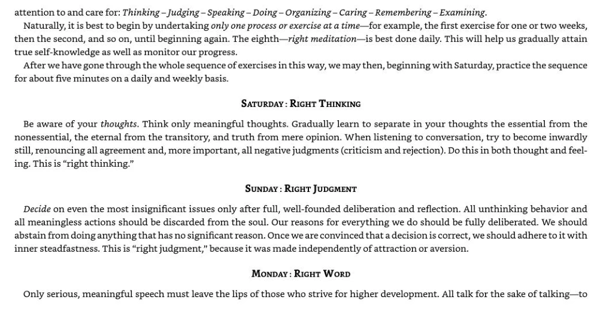
Read the searchable source transcription
attention to and care for: Thinking — Judging — Speaking —- Doing —- Organizing —- Caring - Remembering - Examining.
Naturally, it is best to begin by undertaking only one process or exercise at a time—for example, the first exercise for one or two weeks, then the second, and so on, until beginning again. The eighth—right meditation—is best done daily. This will help us gradually attain true self-knowledge as well as monitor our progress.
After we have gone through the whole sequence of exercises in this way, we may then, beginning with Saturday, practice the sequence for about five minutes on a daily and weekly basis.
Saturpay : RIGHT THINKING
Be aware of your thoughts. Think only meaningful thoughts. Gradually learn to separate in your thoughts the essential from the nonessential, the eternal from the transitory, and truth from mere opinion. When listening to conversation, try to become inwardly still, renouncing all agreement and, more important, all negative judgments (criticism and rejection). Do this in both thought and feeling. This is “right thinking.”
Sunpay : RIGHT JUDGMENT
Decide on even the most insignificant issues only after full, well-founded deliberation and reflection. All unthinking behavior and all meaningless actions should be discarded from the soul. Our reasons for everything we do should be fully deliberated. We should abstain from doing anything that has no significant reason. Once we are convinced that a decision is correct, we should adhere to it with inner steadfastness. This is “right judgment,” because it was made independently of attraction or aversion.
Mownpay: RiGHT WorpD
Only serious, meaningful speech must leave the lips of those who strive for higher development. All talk for the sake of talking—toSource PDF position 121 · English
Open the original source page at full size

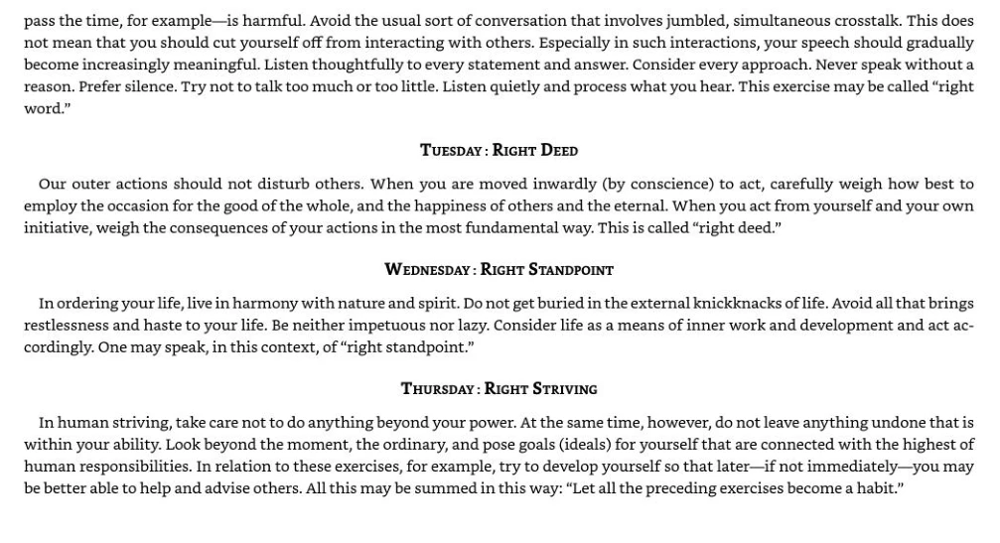
Read the searchable source transcription
pass the time, for example—is harmful. Avoid the usual sort of conversation that involves jumbled, simultaneous crosstalk. This does not mean that you should cut yourself off from interacting with others. Especially in such interactions, your speech should gradually become increasingly meaningful. Listen thoughtfully to every statement and answer. Consider every approach. Never speak without a reason. Prefer silence. Try not to talk too much or too little. Listen quietly and process what you hear. This exercise may be called “right word.”
Tuespay : RiGHT DEED
Our outer actions should not disturb others. When you are moved inwardly (by conscience) to act, carefully weigh how best to employ the occasion for the good of the whole, and the happiness of others and the eternal. When you act from yourself and your own initiative, weigh the consequences of your actions in the most fundamental way. This is called “right deed.”
Wepnespay : RIGHT STANDPOINT
In ordering your life, live in harmony with nature and spirit. Do not get buried in the external knickknacks of life. Avoid all that brings restlessness and haste to your life. Be neither impetuous nor lazy. Consider life as a means of inner work and development and act accordingly. One may speak, in this context, of “right standpoint.”
TuHurspay: RIGHT STRIVING
In human striving, take care not to do anything beyond your power. At the same time, however, do not leave anything undone that is within your ability. Look beyond the moment, the ordinary, and pose goals (ideals) for yourself that are connected with the highest of human responsibilities. In relation to these exercises, for example, try to develop yourself so that later—if not immediately—you may be better able to help and advise others. All this may be summed in this way: “Let all the preceding exercises become a habit.”Source PDF position 122 · English
Open the original source page at full size

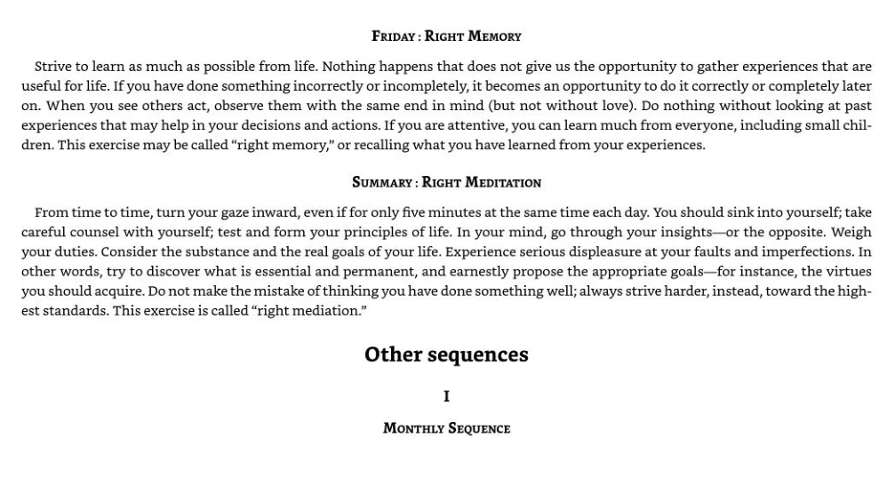
Read the searchable source transcription
Fripay : RiGHT MEMoRY
Strive to learn as much as possible from life. Nothing happens that does not give us the opportunity to gather experiences that are useful for life. If you have done something incorrectly or incompletely, it becomes an opportunity to do it correctly or completely later on. When you see others act, observe them with the same end in mind (but not without love). Do nothing without looking at past experiences that may help in your decisions and actions. If you are attentive, you can learn much from everyone, including small children. This exercise may be called “right memory,” or recalling what you have learned from your experiences.
Summary: RiGHT MEDITATION
From time to time, turn your gaze inward, even if for only five minutes at the same time each day. You should sink into yourself; take careful counsel with yourself; test and form your principles of life. In your mind, go through your insights—or the opposite. Weigh your duties. Consider the substance and the real goals of your life. Experience serious displeasure at your faults and imperfections. In other words, try to discover what is essential and permanent, and earnestly propose the appropriate goals—for instance, the virtues you should acquire. Do not make the mistake of thinking you have done something well; always strive harder, instead, toward the highest standards. This exercise is called “right mediation.”
## Other sequences
I
MonTHLy SEQUENCESource PDF position 123 · English
Open the original source page at full size

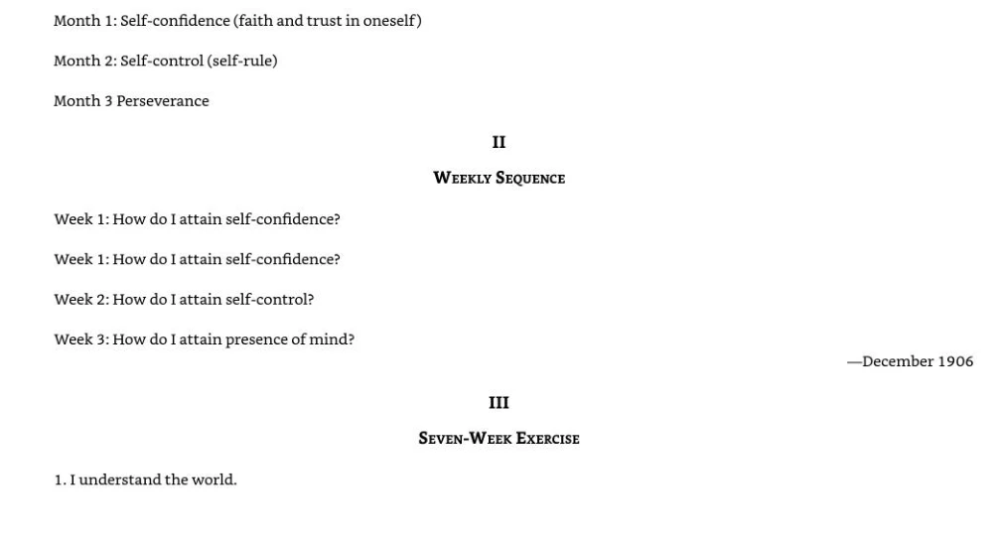
Read the searchable source transcription
Month 1: Self-confidence (faith and trust in oneself)
Month 2: Self-control (self-rule)
Month 3 Perseverance
Week 1: How do I attain self-confidence?
Week 1: How do | attain self-confidence?
Week 2: How do | attain self-control?
Week 3: How do | attain presence of mind?
Il
### WEEKLY SEQUENCE
1. understand the world.
Ill
SEvEN-WEEK EXERCISE
—December 1906Source PDF position 124 · English
Open the original source page at full size

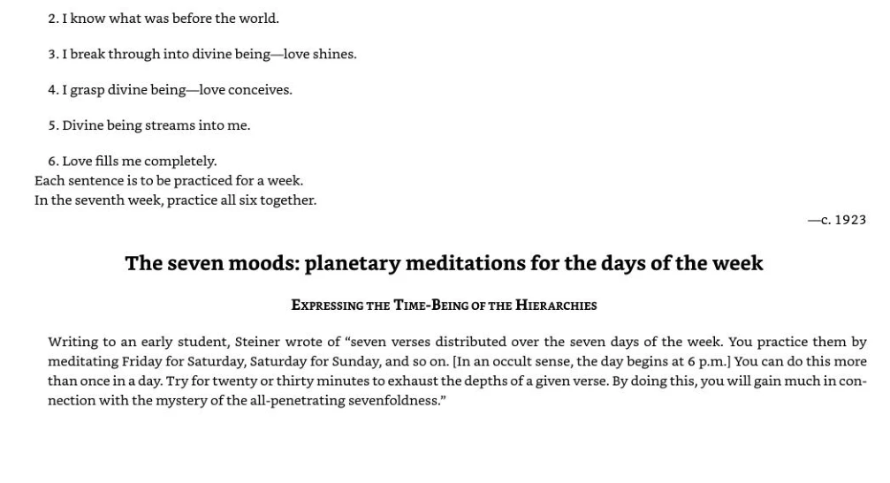
Read the searchable source transcription
2. 1 know what was before the world.
3. I break through into divine being—love shines.
4. |grasp divine being—love conceives.
5. Divine being streams into me.
6. Love fills me completely.
Each sentence is to be practiced for a week. In the seventh week, practice all six together.
—c. 1923
## The seven moods: planetary meditations for the days of the week
### EXPRESSING THE TIME-BEING OF THE HIERARCHIES
Writing to an early student, Steiner wrote of “seven verses distributed over the seven days of the week. You practice them by meditating Friday for Saturday, Saturday for Sunday, and so on. [In an occult sense, the day begins at 6 p.m.] You can do this more than once ina day. Try for twenty or thirty minutes to exhaust the depths of a given verse. By doing this, you will gain much in connection with the mystery of the all-penetrating sevenfoldness.”Source PDF position 125 · English
Open the original source page at full size

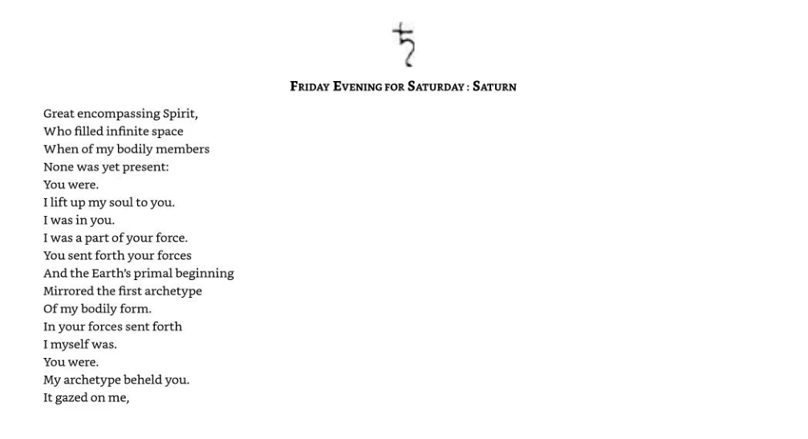
Read the searchable source transcription
Great encompassing Spirit, Who filled infinite space When of my bodily members None was yet present:
You were.
I lift up my soul to you.
I was in you.
I was a part of your force. You sent forth your forces And the Earth’s primal beginning Mirrored the first archetype Of my bodily form.
In your forces sent forth
I myself was.
You were.
My archetype beheld you.
It gazed on me,
¥
Fripay EVENING FOR SATURDAY : SATURNSource PDF position 126 · English
Open the original source page at full size

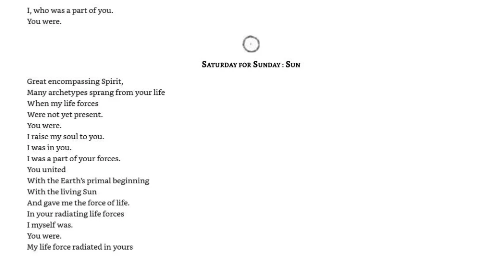
Read the searchable source transcription
I, who was a part of you. You were.
Great encompassing Spirit,
Many archetypes sprang from your life When my life forces
Were not yet present.
You were.
I raise my soul to you.
I was in you.
I was a part of your forces.
You united
With the Earth’s primal beginning With the living Sun
And gave me the force of life.
In your radiating life forces
I myself was.
You were.
My life force radiated in yours
©
SaTURDAY FOR SUNDAY: SUNSource PDF position 127 · English
Open the original source page at full size

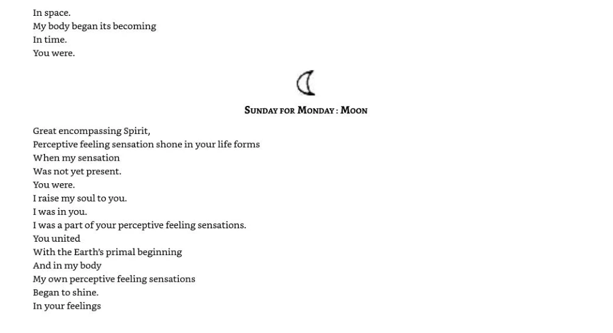
Read the searchable source transcription
In space.
My body began its becoming In time.
You were.
C
Sunpay FoR Monpay : Moon
Great encompassing Spirit,
Perceptive feeling sensation shone in your life forms When my sensation
Was not yet present.
You were.
I raise my soul to you.
I was in you.
I was a part of your perceptive feeling sensations. You united
With the Earth’s primal beginning
And in my body
My own perceptive feeling sensations
Began to shine.
In your feelingsSource PDF position 128 · English
Open the original source page at full size

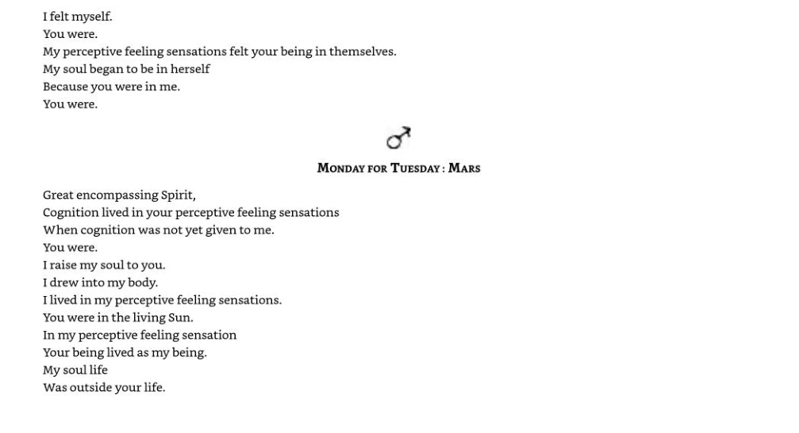
Read the searchable source transcription
I felt myself.
You were.
My perceptive feeling sensations felt your being in themselves. My soul began to be in herself
Because you were in me.
You were.
oe
Mownpay For TuEsDAy : Mars
Great encompassing Spirit,
Cognition lived in your perceptive feeling sensations When cognition was not yet given to me. You were.
I raise my soul to you.
I drew into my body.
I lived in my perceptive feeling sensations. You were in the living Sun.
In my perceptive feeling sensation
Your being lived as my being.
My soul life
Was outside your life.Source PDF position 129 · English
Open the original source page at full size

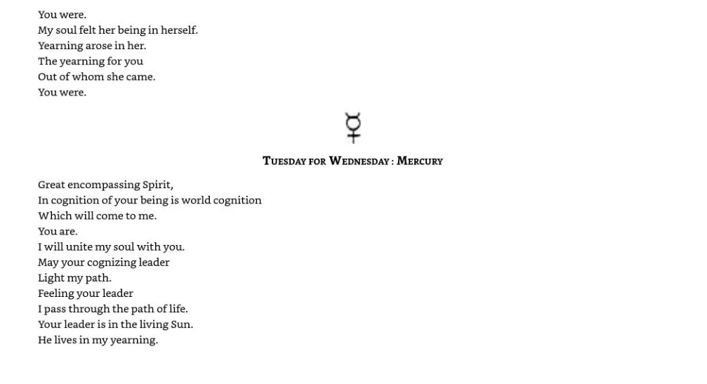
Read the searchable source transcription
You were.
My soul felt her being in herself. Yearning arose in her.
The yearning for you
Out of whom she came.
You were.
g
TUESDAY FOR WEDNESDAY : MERCURY
Great encompassing Spirit,
In cognition of your being is world cognition Which will come to me.
You are.
I will unite my soul with you. May your cognizing leader Light my path.
Feeling your leader
I pass through the path of life. Your leader is in the living Sun. He lives in my yearning.Source PDF position 130 · English
Open the original source page at full size

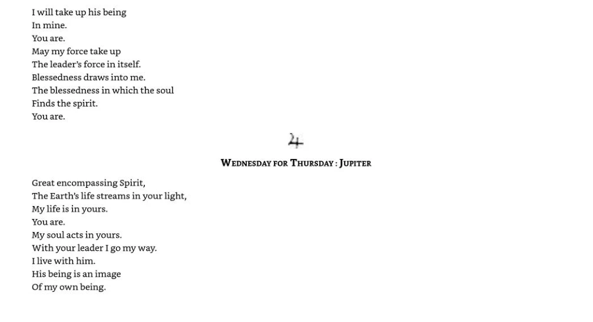
Read the searchable source transcription
I will take up his being
In mine.
You are.
May my force take up
The leader’s force in itself.
Blessedness draws into me.
The blessedness in which the soul
Finds the spirit.
You are.
Great encompassing Spirit,
The Earth’s life streams in your light, My life is in yours.
You are.
My soul acts in yours.
With your leader I go my way.
I live with him.
His being is an image
Of my own being.
y
WEDNESDAY FOR THURSDAY : JUPITERSource PDF position 131 · English
Open the original source page at full size

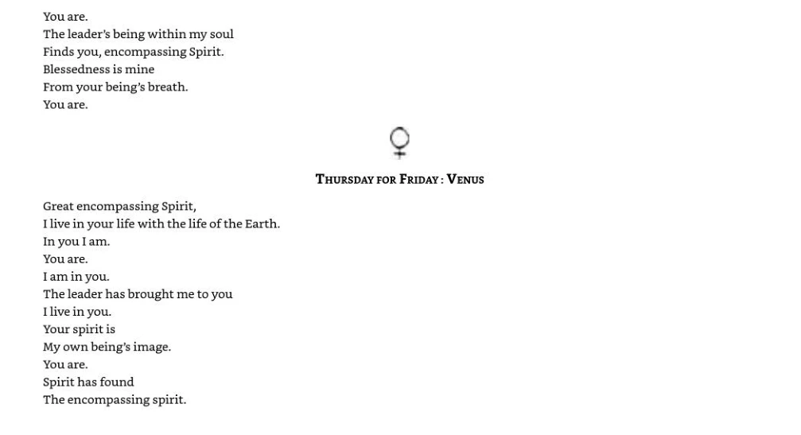
Read the searchable source transcription
You are.
The leader's being within my soul Finds you, encompassing Spirit. Blessedness is mine
From your being’s breath.
You are.
Great encompassing Spirit,
I live in your life with the life of the Earth.
In youl am.
You are.
Iam in you.
The leader has brought me to you I live in you.
Your spirit is
My own being’s image.
You are.
Spirit has found
The encompassing spirit.
e
>
THURSDAY FOR Fripay: VENUSSource PDF position 132 · English
Open the original source page at full size

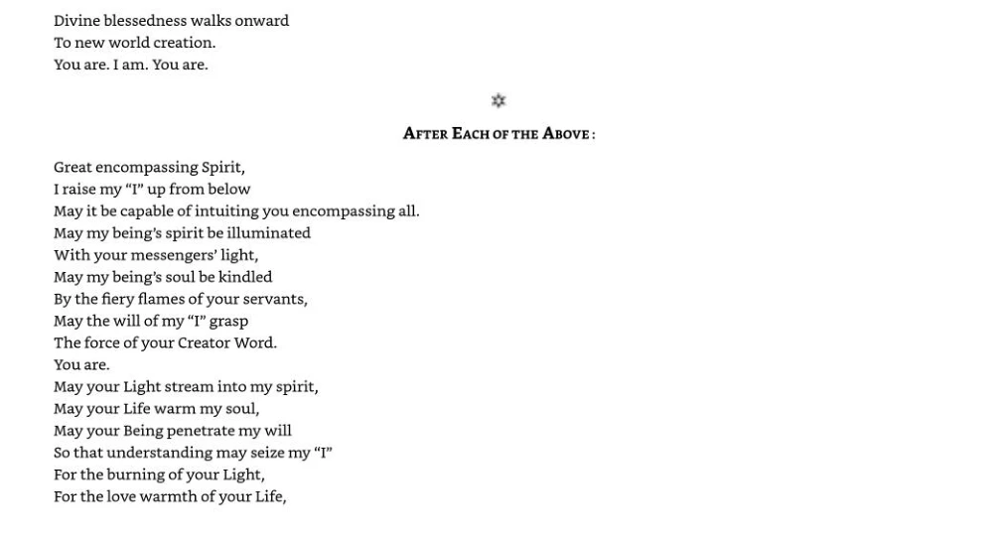
Read the searchable source transcription
Divine blessedness walks onward
To new world creation.
You are. lam. You are.
x
AFTER EACH OF THE ABOVE:
Great encompassing Spirit,
I raise my “I” up from below
May it be capable of intuiting you encompassing all. May my being’s spirit be illuminated With your messengers’ light,
May my being’s soul be kindled
By the fiery flames of your servants, May the will of my “I” grasp
The force of your Creator Word.
You are.
May your Light stream into my spirit, May your Life warm my soul,
May your Being penetrate my will
So that understanding may seize my “I” For the burning of your Light,
For the love warmth of your Life,Source PDF position 133 · English
Open the original source page at full size

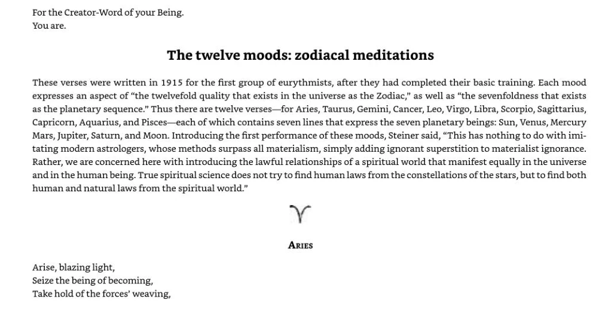
Read the searchable source transcription
For the Creator-Word of your Being. You are.
### The twelve moods: zodiacal meditations
These verses were written in 1915 for the first group of eurythmists, after they had completed their basic training. Each mood expresses an aspect of “the twelvefold quality that exists in the universe as the Zodiac,” as well as “the sevenfoldness that exists as the planetary sequence.” Thus there are twelve verses—for Aries, Taurus, Gemini, Cancer, Leo, Virgo, Libra, Scorpio, Sagittarius, Capricorn, Aquarius, and Pisces—each of which contains seven lines that express the seven planetary beings: Sun, Venus, Mercury Mars, Jupiter, Saturn, and Moon. Introducing the first performance of these moods, Steiner said, “This has nothing to do with imi- tating modern astrologers, whose methods surpass all materialism, simply adding ignorant superstition to materialist ignorance. Rather, we are concerned here with introducing the lawful relationships of a spiritual world that manifest equally in the universe and in the human being. True spiritual science does not try to find human laws from the constellations of the stars, but to find both
human and natural laws from the spiritual world.”
a
Arise, blazing light, Seize the being of becoming, Take hold of the forces’ weaving,
### ARIESSource PDF position 134 · English
Open the original source page at full size

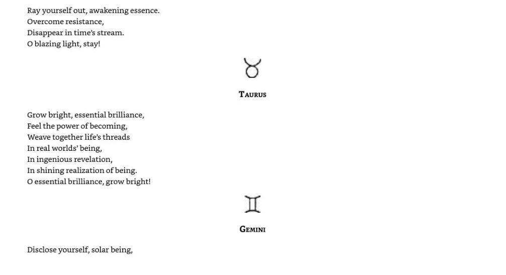
Read the searchable source transcription
Ray yourself out, awakening essence.
Overcome resistance, Disappear in time's stream. O blazing light, stay!
Grow bright, essential brilliance, Feel the power of becoming, Weave together life’s threads
In real worlds’ being,
In ingenious revelation,
In shining realization of being.
O essential brilliance, grow bright!
Disclose yourself, solar being,
Taurus
GEMINISource PDF position 135 · English
Open the original source page at full size

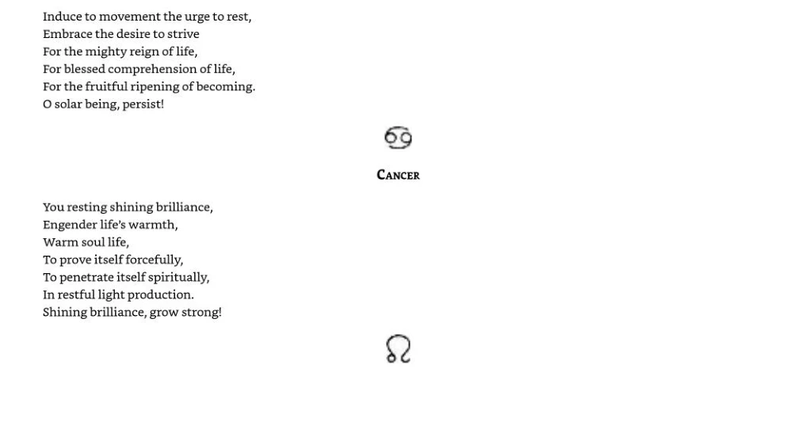
Read the searchable source transcription
Induce to movement the urge to rest, Embrace the desire to strive
For the mighty reign of life,
For blessed comprehension of life, For the fruitful ripening of becoming. O solar being, persist!
You resting shining brilliance, Engender life’s warmth,
Warm soul life,
To prove itself forcefully,
To penetrate itself spiritually, In restful light production. Shining brilliance, grow strong!
CANCERSource PDF position 136 · English
Open the original source page at full size

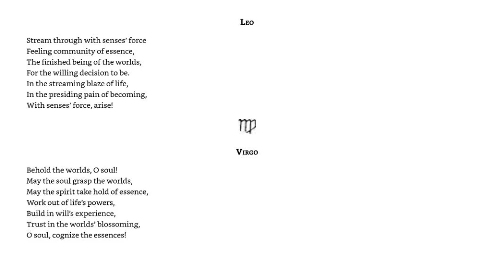
Read the searchable source transcription
Stream through with senses’ force Feeling community of essence, The finished being of the worlds, For the willing decision to be.
In the streaming blaze of life,
In the presiding pain of becoming, With senses’ force, arise!
Behold the worlds, O soul!
May the soul grasp the worlds, May the spirit take hold of essence, Work out of life’s powers,
Build in will’s experience,
Trust in the worlds’ blossoming,
O soul, cognize the essences!
LEo
VircoSource PDF position 137 · English
Open the original source page at full size

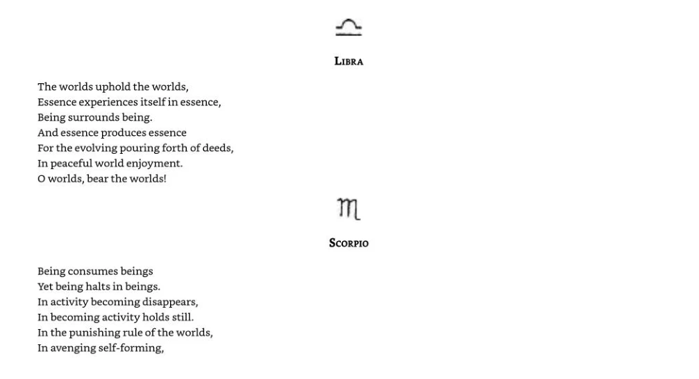
Read the searchable source transcription
The worlds uphold the worlds,
Essence experiences itself in essence, Being surrounds being.
And essence produces essence
For the evolving pouring forth of deeds, In peaceful world enjoyment.
O worlds, bear the worlds!
Being consumes beings
Yet being halts in beings.
In activity becoming disappears,
In becoming activity holds still.
In the punishing rule of the worlds, In avenging self-forming,
P
Lipra
ScorpioSource PDF position 138 · English
Open the original source page at full size

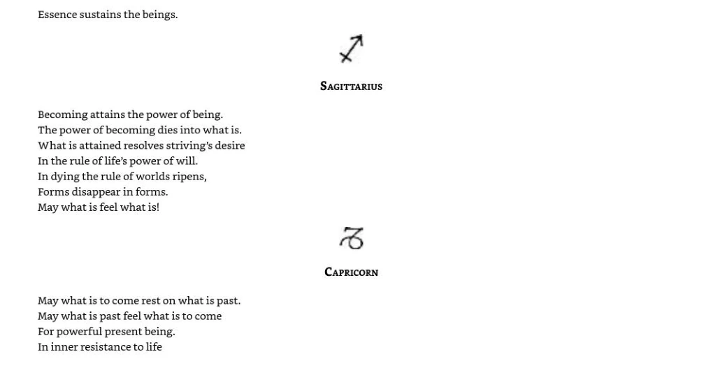
Read the searchable source transcription
Essence sustains the beings.
Becoming attains the power of being.
The power of becoming dies into what is. What is attained resolves striving’s desire In the rule of life’s power of will.
In dying the rule of worlds ripens,
Forms disappear in forms.
May what is feel what is!
May what is to come rest on what is past. May what is past feel what is to come For powerful present being.
In inner resistance to life
Ps
SAGITTARIUS
## 6 CAPRICORNSource PDF position 139 · English
Open the original source page at full size

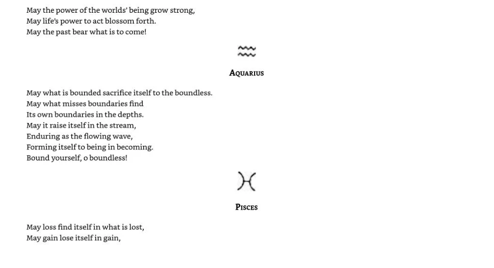
Read the searchable source transcription
May the power of the worlds’ being grow strong, May life’s power to act blossom forth. May the past bear what is to come!
May what is bounded sacrifice itself to the boundless. May what misses boundaries find
Its own boundaries in the depths.
May it raise itself in the stream,
Enduring as the flowing wave,
Forming itself to being in becoming.
Bound yourself, o boundless!
May loss find itself in what is lost, May gain lose itself in gain,
wn wns
Aquarius
PiscesSource PDF position 140 · English
Open the original source page at full size

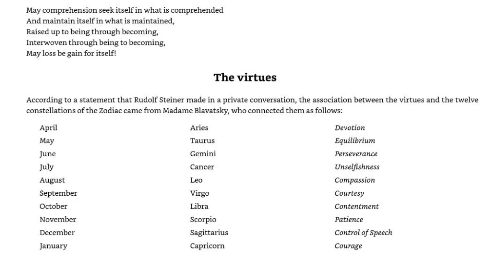
Read the searchable source transcription
May comprehension seek itself in what is comprehended
And maintain itself in what is maintained, Raised up to being through becoming, Interwoven through being to becoming, May loss be gain for itself!
### The virtues
According to a statement that Rudolf Steiner made in a private conversation, the association between the virtues and the twelve constellations of the Zodiac came from Madame Blavatsky, who connected them as follows:
April
May
June
July
August September October
November
December
January
Aries
Taurus
Gemini
Cancer
Leo
Virgo Libra
Scorpio Sagittarius
Capricorn
Devotion
Equilibrium
Perseverance
Unselfishness Compassion
Courtesy
Contentment
Patience
Control of Speech
CourageSource PDF position 141 · English
Open the original source page at full size

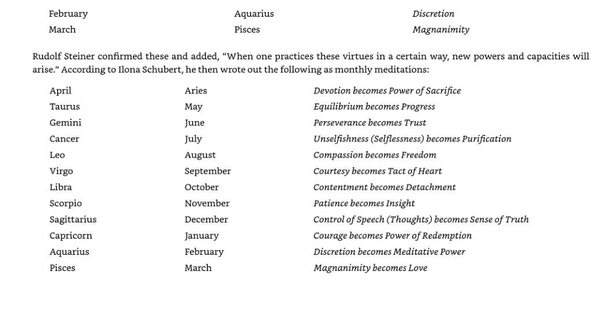
Read the searchable source transcription
February March
Discretion
Magnanimity
Rudolf Steiner confirmed these and added, “When one practices these virtues in a certain way, new powers and capacities will arise.” According to Ilona Schubert, he then wrote out the following as monthly meditations:
April
Taurus
Gemini
Cancer
Leo
Virgo Libra
Scorpio Sagittarius Capricorn Aquarius
Pisces
Aries
May
June
July
August September October
November
December
January
February March
Devotion becomes Power of Sacrifice Equilibrium becomes Progress
Perseverance becomes Trust
Unselfishness (Selflessness) becomes Purification Compassion becomes Freedom
Courtesy becomes Tact of Heart
Contentment becomes Detachment
Patience becomes Insight
Control of Speech (Thoughts) becomes Sense of Truth Courage becomes Power of Redemption Discretion becomes Meditative Power
Magnanimity becomes LoveSource PDF position 142 · English
Open the original source page at full size

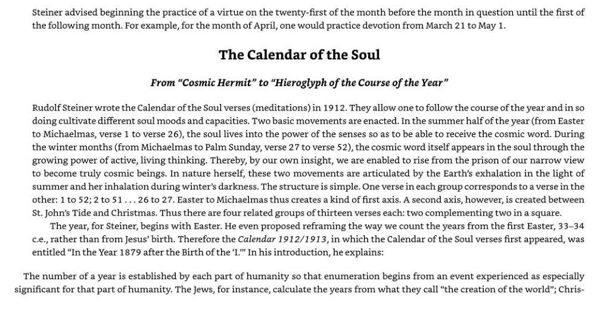
Read the searchable source transcription
Steiner advised beginning the practice of a virtue on the twenty-first of the month before the month in question until the first of the following month. For example, for the month of April, one would practice devotion from March 21 to May 1.
### The Calendar of the Soul
From “Cosmic Hermit” to “Hieroglyph of the Course of the Year”
Rudolf Steiner wrote the Calendar of the Soul verses (meditations) in 1912. They allow one to follow the course of the year and in so doing cultivate different soul moods and capacities. Two basic movements are enacted. In the summer half of the year (from Easter to Michaelmas, verse 1 to verse 26), the soul lives into the power of the senses so as to be able to receive the cosmic word. During the winter months (from Michaelmas to Palm Sunday, verse 27 to verse 52), the cosmic word itself appears in the soul through the growing power of active, living thinking. Thereby, by our own insight, we are enabled to rise from the prison of our narrow view to become truly cosmic beings. In nature herself, these two movements are articulated by the Earth's exhalation in the light of summer and her inhalation during winter’s darkness. The structure is simple. One verse in each group corresponds to a verse in the other: 1 to 52;2 to 51...26 to 27. Easter to Michaelmas thus creates a kind of first axis. A second axis, however, is created between St. John’s Tide and Christmas. Thus there are four related groups of thirteen verses each: two complementing two in a square.
The year, for Steiner, begins with Easter. He even proposed reframing the way we count the years from the first Easter, 33-34 c.e., rather than from Jesus’ birth. Therefore the Calendar 1912/1913, in which the Calendar of the Soul verses first appeared, was entitled “In the Year 1879 after the Birth of the ‘I.” In his introduction, he explains:
The number of a year is established by each part of humanity so that enumeration begins from an event experienced as especially significant for that part of humanity. The Jews, for instance, calculate the years from what they call “the creation of the world”; Chris-Source PDF position 144 · English
Open the original source page at full size

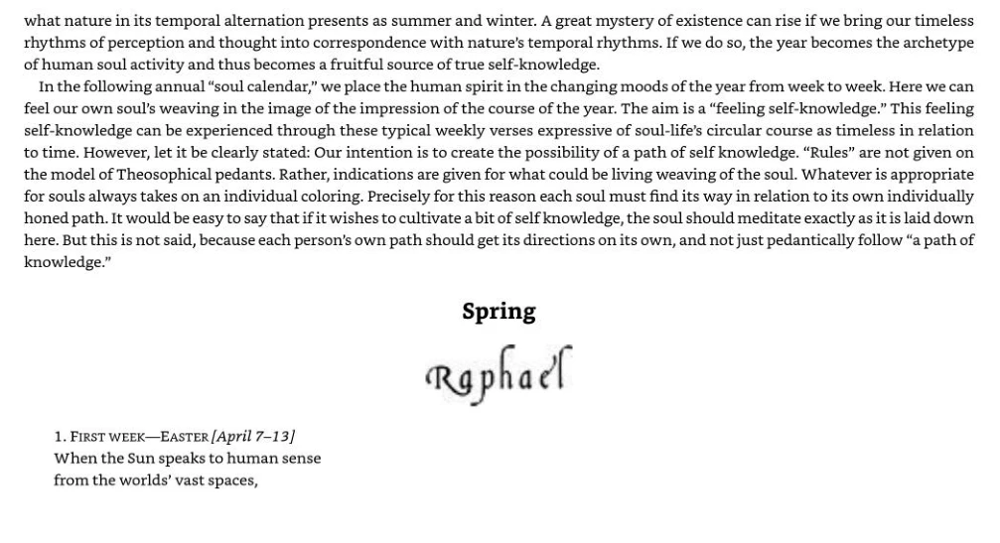
Read the searchable source transcription
what nature in its temporal alternation presents as summer and winter. A great mystery of existence can rise if we bring our timeless rhythms of perception and thought into correspondence with nature's temporal rhythms. If we do so, the year becomes the archetype of human soul activity and thus becomes a fruitful source of true self-knowledge.
In the following annual “soul calendar,” we place the human spirit in the changing moods of the year from week to week. Here we can feel our own soul’s weaving in the image of the impression of the course of the year. The aim is a “feeling self-knowledge.” This feeling self-knowledge can be experienced through these typical weekly verses expressive of soul-life’s circular course as timeless in relation to time. However, let it be clearly stated: Our intention is to create the possibility of a path of self knowledge. “Rules” are not given on the model of Theosophical pedants. Rather, indications are given for what could be living weaving of the soul. Whatever is appropriate for souls always takes on an individual coloring. Precisely for this reason each soul must find its way in relation to its own individually honed path. It would be easy to say that if it wishes to cultivate a bit of self knowledge, the soul should meditate exactly as it is laid down here. But this is not said, because each person’s own path should get its directions on its own, and not just pedantically follow “a path of knowledge.”
1. FIRST WEEK—EASTER [April 7-13]
When the Sun speaks to human sense from the worlds’ vast spaces,
## Spring
RaphaelSource PDF position 145 · English
Open the original source page at full size

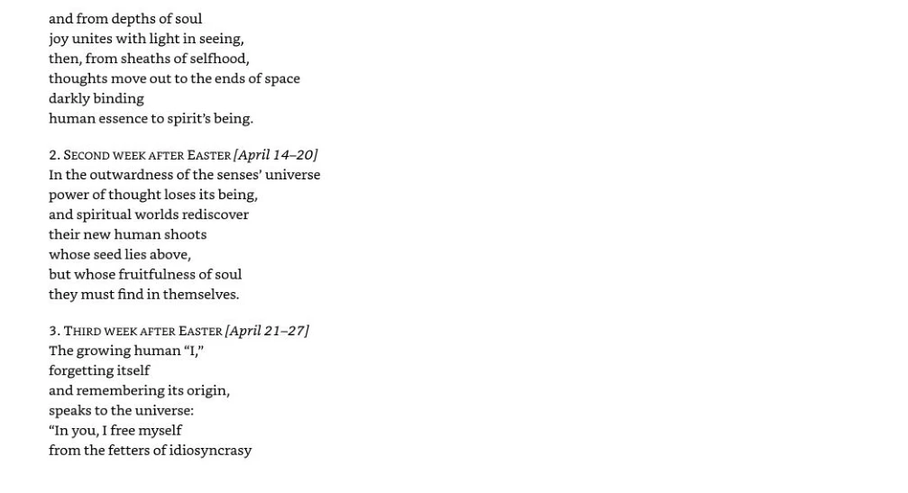
Read the searchable source transcription
and from depths of soul
joy unites with light in seeing,
then, from sheaths of selfhood, thoughts move out to the ends of space darkly binding
human essence to spirit’s being.
2. SECOND WEEK AFTER EASTER [April 14-20]
In the outwardness of the senses’ universe
power of thought loses its being,
and spiritual worlds rediscover
their new human shoots
whose seed lies above,
but whose fruitfulness of soul
they must find in themselves.
3. THIRD WEEK AFTER EASTER [April 21-27]
The growing human “I,”
forgetting itself
and remembering its origin,
speaks to the universe:
“In you, I free myself
from the fetters of idiosyncrasySource PDF position 146 · English
Open the original source page at full size

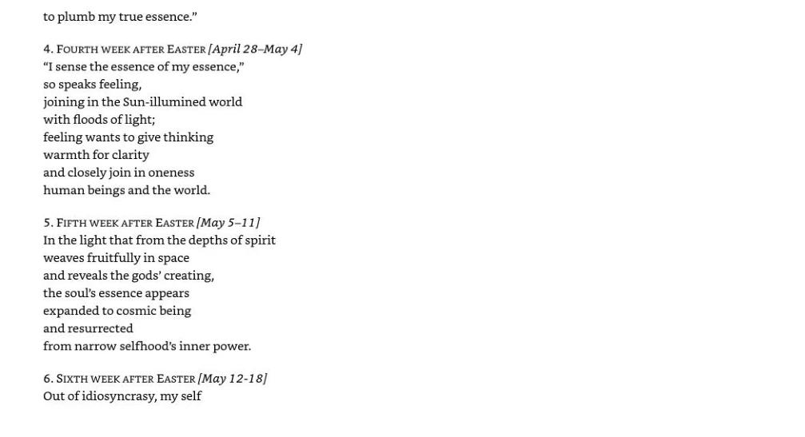
Read the searchable source transcription
to plumb my true essence.”
4. FOURTH WEEK AFTER EASTER [April 28-May 4]
“I sense the essence of my essence,”
so speaks feeling,
joining in the Sun-illumined world
with floods of light;
feeling wants to give thinking
warmth for clarity
and closely join in oneness
human beings and the world.
5. FIFTH WEEK AFTER EASTER [May 5-11]
In the light that from the depths of spirit weaves fruitfully in space
and reveals the gods’ creating,
the soul's essence appears
expanded to cosmic being
and resurrected
from narrow selfhood’s inner power.
6. SIXTH WEEK AFTER EASTER [May 12-18]
Out of idiosyncrasy, my selfSource PDF position 147 · English
Open the original source page at full size

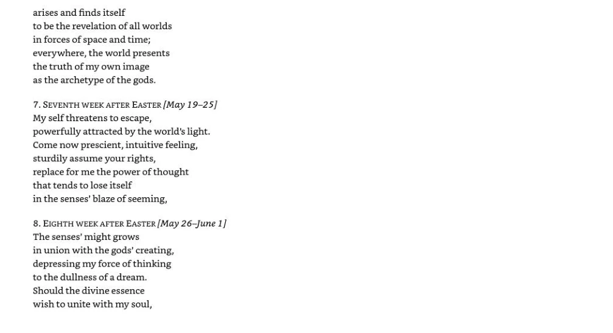
Read the searchable source transcription
arises and finds itself
to be the revelation of all worlds
in forces of space and time; everywhere, the world presents the truth of my own image
as the archetype of the gods.
7. SEVENTH WEEK AFTER EASTER [May 19-25]
My self threatens to escape,
powerfully attracted by the world’s light. Come now prescient, intuitive feeling, sturdily assume your rights,
replace for me the power of thought
that tends to lose itself
in the senses’ blaze of seeming,
8. EIGHTH WEEK AFTER EASTER [May 26-June 1]
The senses’ might grows
in union with the gods’ creating,
depressing my force of thinking
to the dullness of a dream.
Should the divine essence
wish to unite with my soul,Source PDF position 148 · English
Open the original source page at full size

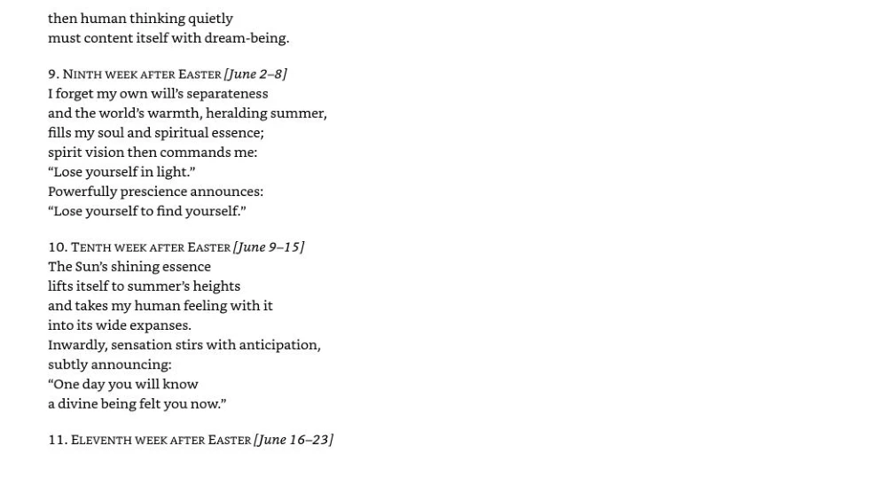
Read the searchable source transcription
then human thinking quietly must content itself with dream-being.
9. NINTH WEEK AFTER EASTER [June 2-8]
I forget my own will’s separateness
and the world’s warmth, heralding summer, fills my soul and spiritual essence;
spirit vision then commands me:
“Lose yourself in light.”
Powerfully prescience announces:
“Lose yourself to find yourself.”
10. TENTH WEEK AFTER EASTER [June 9-15]
The Sun's shining essence
lifts itself to summer’s heights
and takes my human feeling with it
into its wide expanses.
Inwardly, sensation stirs with anticipation, subtly announcing:
“One day you will know
a divine being felt you now.”
11. ELEVENTH WEEK AFTER EASTER [June 16-23]Source PDF position 149 · English
Open the original source page at full size

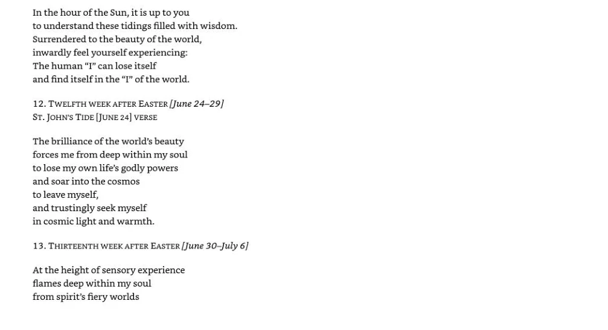
Read the searchable source transcription
In the hour of the Sun, it is up to you
to understand these tidings filled with wisdom. Surrendered to the beauty of the world, inwardly feel yourself experiencing:
The human “I” can lose itself
and find itself in the “I” of the world.
12. TWELFTH WEEK AFTER EASTER [June 24-29]
ST. JOHN’s TIDE [JUNE 24] VERSE
The brilliance of the world’s beauty forces me from deep within my soul to lose my own life’s godly powers and soar into the cosmos
to leave myself,
and trustingly seek myself
in cosmic light and warmth.
13. THIRTEENTH WEEK AFTER EASTER [June 30-July 6]
At the height of sensory experience flames deep within my soul from spirit’s fiery worldsSource PDF position 150 · English
Open the original source page at full size

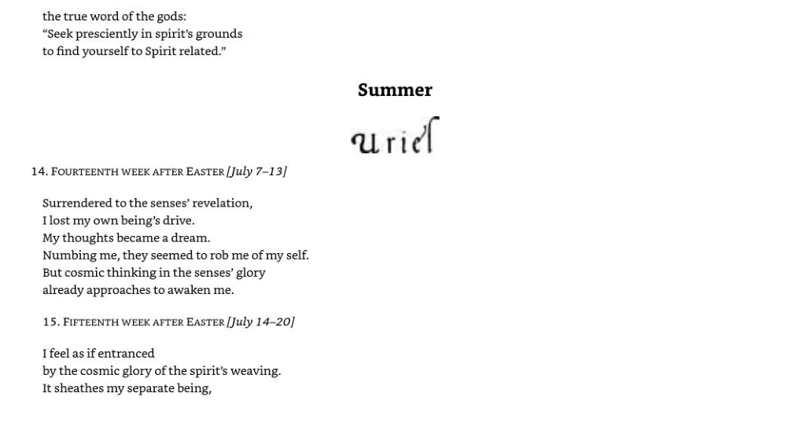
Read the searchable source transcription
the true word of the gods: “Seek presciently in spirit’s grounds to find yourself to Spirit related.”
14. FOURTEENTH WEEK AFTER EASTER [July 7-13]
Surrendered to the senses’ revelation,
I lost my own being’s drive.
My thoughts became a dream.
Numbing me, they seemed to rob me of my self. But cosmic thinking in the senses’ glory already approaches to awaken me.
15. FIFTEENTH WEEK AFTER EASTER [July 14-20]
I feel as if entranced
by the cosmic glory of the spirit’s weaving. It sheathes my separate being,
Summer
urielSource PDF position 151 · English
Open the original source page at full size

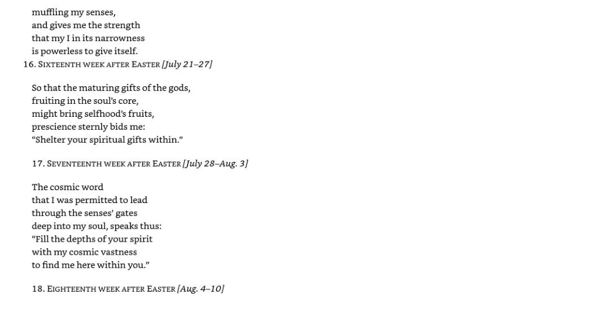
Read the searchable source transcription
muffling my senses, and gives me the strength that my | in its narrowness is powerless to give itself.
16. SIXTEENTH WEEK AFTER EASTER [July 21-27]
So that the maturing gifts of the gods, fruiting in the soul’s core,
might bring selfhood’s fruits, prescience sternly bids me:
“Shelter your spiritual gifts within.”
17. SEVENTEENTH WEEK AFTER EASTER [July 28-Aug. 3]
The cosmic word
that I was permitted to lead through the senses’ gates
deep into my soul, speaks thus: “Fill the depths of your spirit with my cosmic vastness
to find me here within you.”
18. EIGHTEENTH WEEK AFTER EASTER [Aug. 4-10]Source PDF position 152 · English
Open the original source page at full size

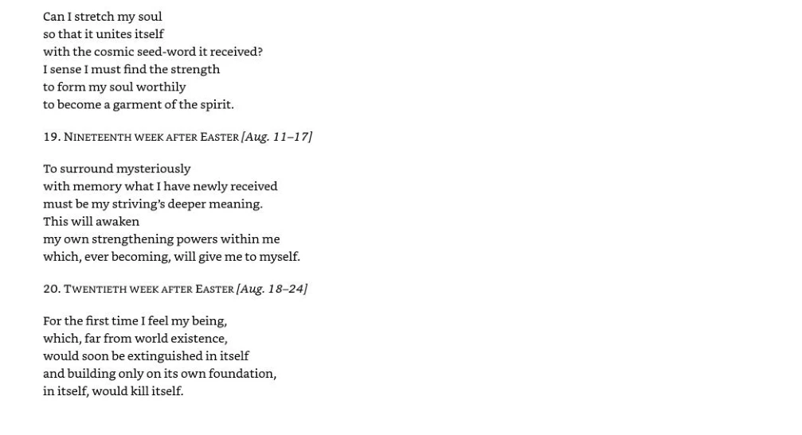
Read the searchable source transcription
Can I stretch my soul
so that it unites itself
with the cosmic seed-word it received?
I sense I must find the strength
to form my soul worthily
to become a garment of the spirit.
19. NINETEENTH WEEK AFTER EASTER [Aug. 11-17]
To surround mysteriously
with memory what I have newly received must be my striving’s deeper meaning.
This will awaken
my own strengthening powers within me which, ever becoming, will give me to myself.
20. TWENTIETH WEEK AFTER EASTER /[Aug. 18-24]
For the first time I feel my being,
which, far from world existence,
would soon be extinguished in itself
and building only on its own foundation, in itself, would kill itself.Source PDF position 153 · English
Open the original source page at full size

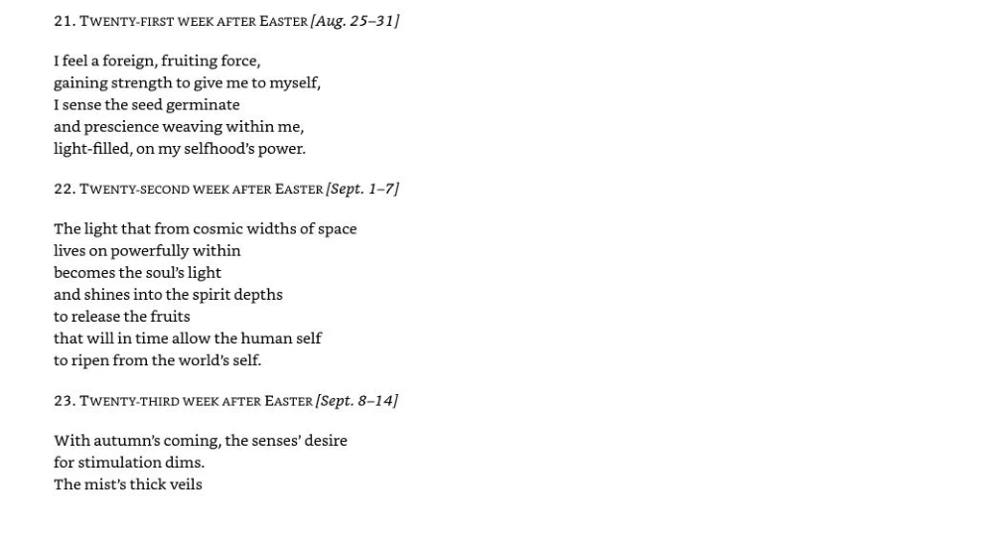
Read the searchable source transcription
21. TWENTY-FIRST WEEK AFTER EASTER [Aug. 25-31]
I feel a foreign, fruiting force,
gaining strength to give me to myself, I sense the seed germinate
and prescience weaving within me, light-filled, on my selfhood’s power.
22. TWENTY-SECOND WEEK AFTER EASTER [Sept. 1-7]
The light that from cosmic widths of space lives on powerfully within
becomes the soul’s light
and shines into the spirit depths
to release the fruits
that will in time allow the human self
to ripen from the world’s self.
23. TWENTY-THIRD WEEK AFTER EASTER [Sept. 8-14]
With autumn’s coming, the senses’ desire for stimulation dims.
The mist’s thick veilsSource PDF position 154 · English
Open the original source page at full size

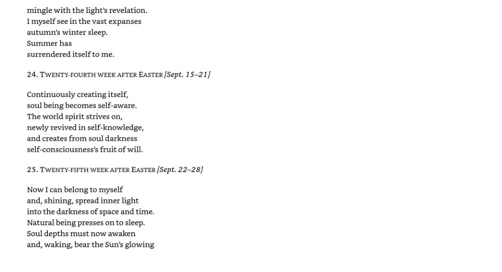
Read the searchable source transcription
mingle with the light’s revelation. I myself see in the vast expanses autumn’s winter sleep.
Summer has
surrendered itself to me.
24. TWENTY-FOURTH WEEK AFTER EASTER [Sept. 15-21]
Continuously creating itself, soul being becomes self-aware. The world spirit strives on, newly revived in self-knowledge, and creates from soul darkness
self-consciousness’s fruit of will.
25. TWENTY-FIFTH WEEK AFTER EASTER [Sept. 22-28]
Now I can belong to myself
and, shining, spread inner light into the darkness of space and time. Natural being presses on to sleep. Soul depths must now awaken
and, waking, bear the Sun's glowingSource PDF position 155 · English
Open the original source page at full size

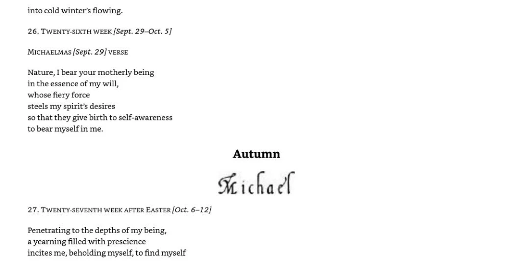
Read the searchable source transcription
into cold winter’s flowing.
26. TWENTY-SIXTH WEEK [Sept. 29-Oct. 5]
MICHAELMAS [Sept. 29] VERSE
Nature, I bear your motherly being
in the essence of my will,
whose fiery force
steels my spirit’s desires
so that they give birth to self-awareness to bear myself in me.
27. TWENTY-SEVENTH WEEK AFTER EASTER [Oct. 6-12]
Penetrating to the depths of my being, a yearning filled with prescience incites me, beholding myself, to find myself
Autumn
KichaclSource PDF position 156 · English
Open the original source page at full size

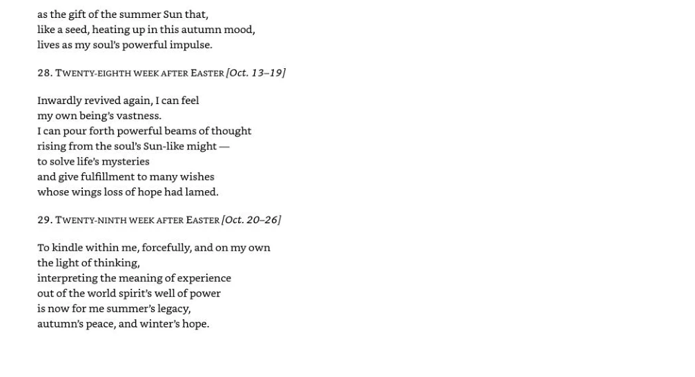
Read the searchable source transcription
as the gift of the summer Sun that, like a seed, heating up in this autumn mood, lives as my soul's powerful impulse.
28. TWENTY-EIGHTH WEEK AFTER EASTER [Oct. 13-19]
Inwardly revived again, I can feel
my own being’s vastness.
Ican pour forth powerful beams of thought rising from the soul’s Sun-like might —
to solve life’s mysteries
and give fulfillment to many wishes
whose wings loss of hope had lamed.
29. TWENTY-NINTH WEEK AFTER EASTER /Oct. 20-26]
To kindle within me, forcefully, and on my own the light of thinking,
interpreting the meaning of experience
out of the world spirit’s well of power
is now for me summer's legacy,
autumn’s peace, and winter’s hope.Source PDF position 157 · English
Open the original source page at full size

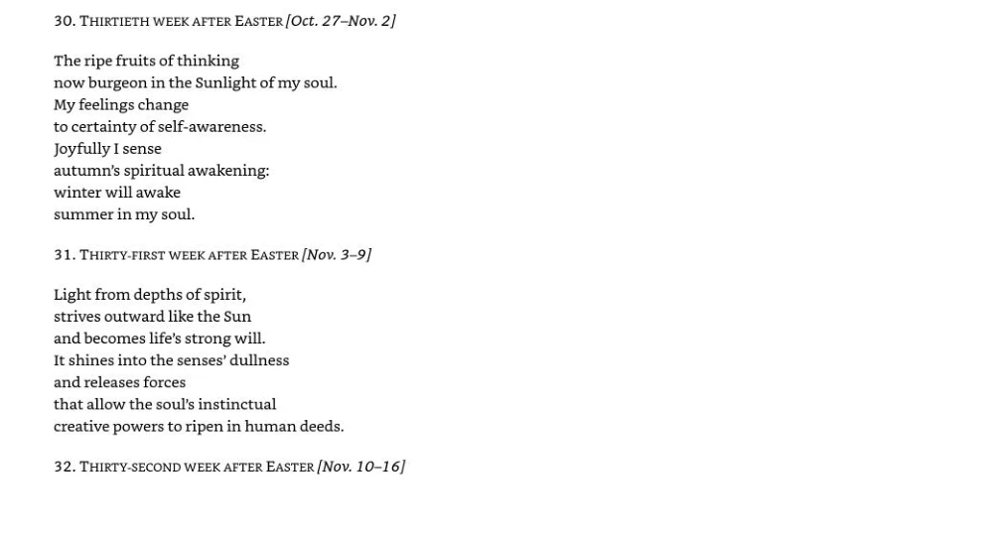
Read the searchable source transcription
30. THIRTIETH WEEK AFTER EASTER /[Oct. 27—Nov. 2]
The ripe fruits of thinking
now burgeon in the Sunlight of my soul. My feelings change
to certainty of self-awareness.
Joyfully I sense
autumn’s spiritual awakening:
winter will awake
summer in my soul.
31. THIRTY-FIRST WEEK AFTER EASTER [Nov. 3-9]
Light from depths of spirit,
strives outward like the Sun
and becomes life’s strong will.
It shines into the senses’ dullness
and releases forces
that allow the soul's instinctual
creative powers to ripen in human deeds.
32. THIRTY-SECOND WEEK AFTER EASTER [Nov. 10-16]Source PDF position 158 · English
Open the original source page at full size

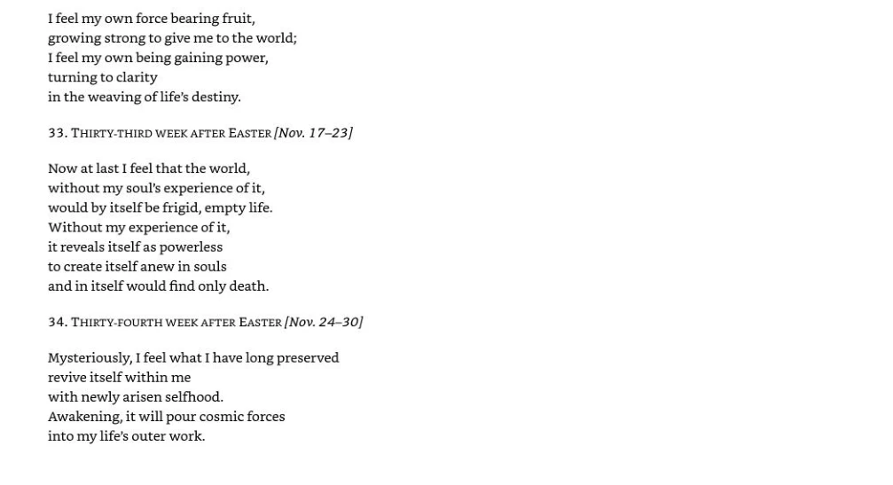
Read the searchable source transcription
I feel my own force bearing fruit, growing strong to give me to the world; I feel my own being gaining power, turning to clarity
in the weaving of life’s destiny.
33. THIRTY-THIRD WEEK AFTER EASTER [Nov. 1 7-23]
Now at last I feel that the world, without my soul's experience of it, would by itself be frigid, empty life. Without my experience of it,
it reveals itself as powerless
to create itself anew in souls
and in itself would find only death.
34. THIRTY-FOURTH WEEK AFTER EASTER /Nov. 24-30]
Mysteriously, I feel what I have long preserved revive itself within me
with newly arisen selfhood.
Awakening, it will pour cosmic forces
into my life’s outer work.Source PDF position 159 · English
Open the original source page at full size

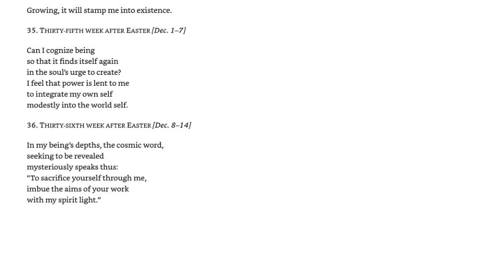
Read the searchable source transcription
Growing, it will stamp me into existence.
35. THIRTY-FIFTH WEEK AFTER EASTER [Dec. 1-7]
Can I cognize being
so that it finds itself again
in the soul's urge to create?
I feel that power is lent to me to integrate my own self modestly into the world self.
36. THIRTY-SIXTH WEEK AFTER EASTER [Dec. 8-14]
In my being’s depths, the cosmic word, seeking to be revealed
mysteriously speaks thus:
“To sacrifice yourself through me, imbue the aims of your work
with my spirit light.”Source PDF position 160 · English
Open the original source page at full size

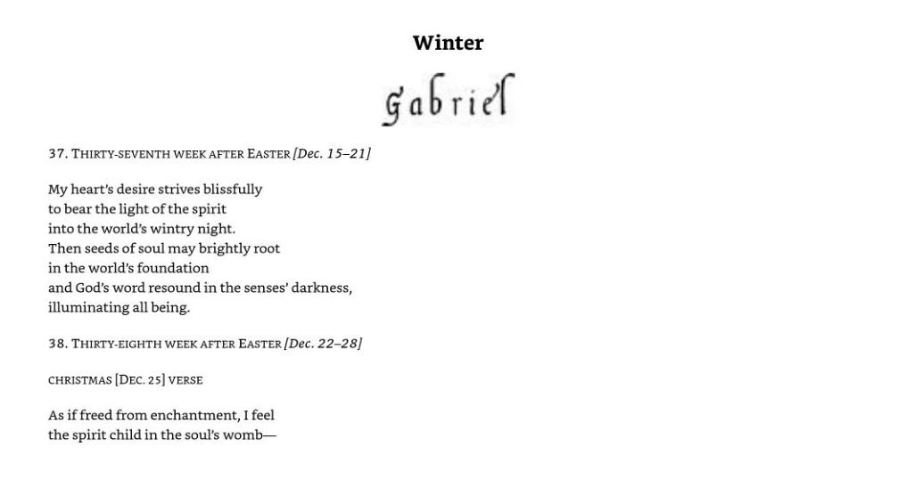
Read the searchable source transcription
37. THIRTY-SEVENTH WEEK AFTER EASTER [Dec. 15-21]
My heart’s desire strives blissfully
to bear the light of the spirit
into the world’s wintry night.
Then seeds of soul may brightly root
in the world’s foundation
and God’s word resound in the senses’ darkness, illuminating all being.
38. THIRTY-EIGHTH WEEK AFTER EASTER [Dec. 22-28]
CHRISTMAS [DEC. 25] VERSE
As if freed from enchantment, I feel the spirit child in the soul’s womb—
Winter
## gabrielSource PDF position 161 · English
Open the original source page at full size

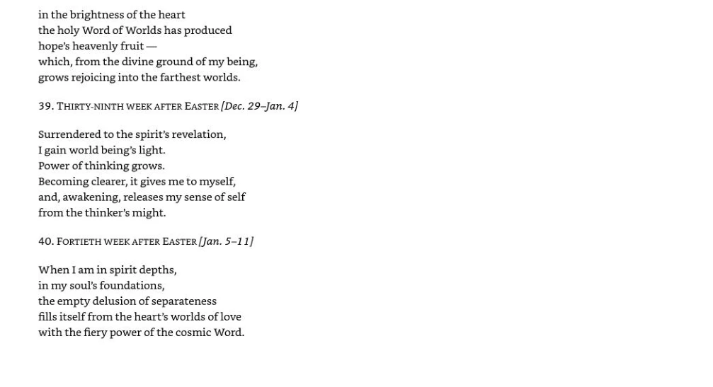
Read the searchable source transcription
in the brightness of the heart
the holy Word of Worlds has produced hope's heavenly fruit —
which, from the divine ground of my being, grows rejoicing into the farthest worlds.
39. THIRTY-NINTH WEEK AFTER EASTER [Dec. 29-Jan. 4]
Surrendered to the spirit’s revelation,
I gain world being’s light.
Power of thinking grows.
Becoming clearer, it gives me to myself, and, awakening, releases my sense of self from the thinker’s might.
40. FORTIETH WEEK AFTER EASTER [Jan. 5-11]
When Iam in spirit depths,
in my soul’s foundations,
the empty delusion of separateness
fills itself from the heart’s worlds of love
with the fiery power of the cosmic Word.Source PDF position 162 · English
Open the original source page at full size

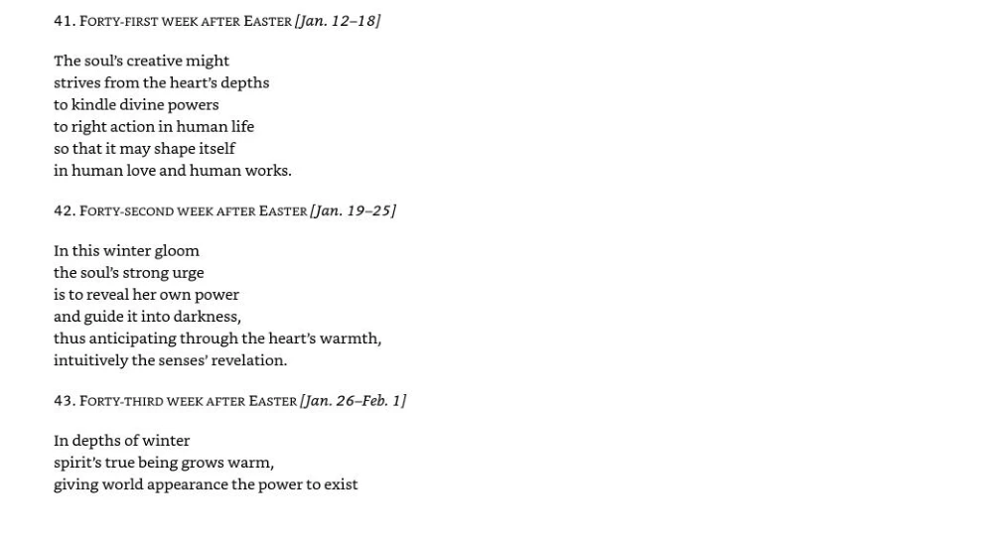
Read the searchable source transcription
41. FORTY-FIRST WEEK AFTER EASTER [Jan. 12-18]
The soul’s creative might
strives from the heart’s depths
to kindle divine powers
to right action in human life
so that it may shape itself
in human love and human works.
42. FORTY-SECOND WEEK AFTER EASTER [Jan. 19-25]
In this winter gloom
the soul's strong urge
is to reveal her own power
and guide it into darkness,
thus anticipating through the heart’s warmth, intuitively the senses’ revelation.
43. FORTY-THIRD WEEK AFTER EASTER [Jan. 26-Feb. 1]
In depths of winter spirit’s true being grows warm, giving world appearance the power to existSource PDF position 163 · English
Open the original source page at full size

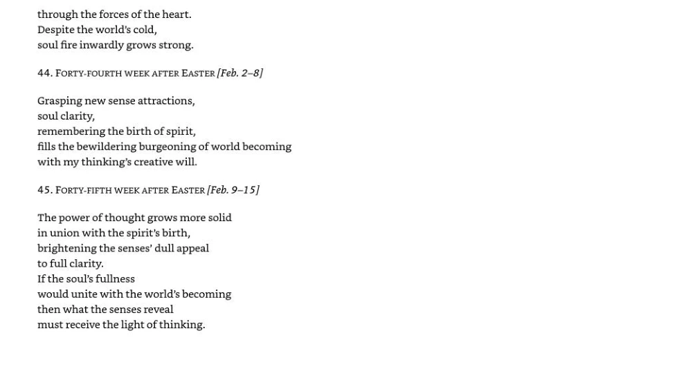
Read the searchable source transcription
through the forces of the heart. Despite the world’s cold, soul fire inwardly grows strong.
44. FORTY-FOURTH WEEK AFTER EASTER [Feb. 2-8]
Grasping new sense attractions,
soul clarity,
remembering the birth of spirit,
fills the bewildering burgeoning of world becoming with my thinking’s creative will.
45. FORTY-FIFTH WEEK AFTER EASTER [Feb. 9-15]
The power of thought grows more solid in union with the spirit’s birth, brightening the senses’ dull appeal
to full clarity.
If the soul’s fullness
would unite with the world’s becoming then what the senses reveal
must receive the light of thinking.Source PDF position 164 · English
Open the original source page at full size

Read the searchable source transcription
46. FORTY-SIXTH WEEK AFTER EASTER /[Feb. 16-22]
The world threatens to numb
my soul's inherent powers. Therefore, memory, step forth shining from depths of spirit, strengthen my vision
that only by strength of will is able to sustain itself.
47. FORTY-SEVENTH WEEK AFTER EASTER [Feb. 23—March 1]
The joy of becoming arises
out of the world’s womb, quickening the senses’ brilliance. May it find my force of thinking fortified by the divine powers living powerfully within me.
48. FORTY-EIGHTH WEEK AFTER EASTER [March 2-8]
Let the certainty of cosmic thinking now appear in the light from cosmic heightsSource PDF position 165 · English
Open the original source page at full size

Read the searchable source transcription
that streams down powerfully to the soul solving the riddles of the soul,
gathering in the power of its beams, awakening love in human hearts.
49. FORTY-NINTH WEEK AFTER EASTER [March 9-15]
“I feel the strength of cosmic being,” so speaks clarity of thought, recalling its own spirit’s growth
in the dark nights of the world
and bending its inward rays of hope toward the dawning cosmic day.
50. FIFTIETH WEEK AFTER EASTER [March 16-22]
Powerfully revealing itself,
and setting loose the forces of its being, world existence’s joy of becoming speaks to the human “I”:
“Into you I bear my life
out of its magic enchantment
and thus attain my true goal.”Source PDF position 166 · English
Open the original source page at full size

Read the searchable source transcription
51. FIFTY-FIRST WEEK AFTER EASTER [March 23-29]
The senses’ riches pour
into my inner being.
The world spirit finds itself mirrored in the human eye,
which out of this spirit
must ever create its strength anew.
52. FIFTY-SECOND WEEK [March 30]
When from depths of soul spirit turns to world being, and beauty streams forth from the vastness of space, then, from heavenly distances, power of life enters our bodies, uniting, with powerful effect, spirit’s essence with our being.Source PDF position 167 · English
Open the original source page at full size

Read the searchable source transcription
### Meditations for the festivals
## Christmas
Through the course of the year summer's power of growth
is exchanged
for winter’s earthly peace.
In the course of human life
the power of waking is exchanged
for sleep's peaceful presence.
In both sleeping and waking,
the spirit-filled soul lives on.
Thus, the Earth’s soul lives on spiritually
through the exchange of summer and winter.
—From a notebookSource PDF position 168 · English
Open the original source page at full size

Read the searchable source transcription
The Earth's soul sleeps
in summer's time of heat.
The Sun’s image streams brightly in external space.
The Earth’s soul wakes
in winter's time of cold.
The true Sun
shines spiritually
In inner being. Summer's joyful day
Is Earth’s sleep.
Winter’s initiation night Is Earth’s day.
Il
Christmas Eve (Initiation Night), 1920
—For Helene Roschling, Christmas 1920Source PDF position 169 · English
Open the original source page at full size

Read the searchable source transcription
The soul’s eye mirrors The Earth's light of hope
The world’s holy wisdom Speaks to human hearts
The Father’s eternal Love
Sends to Earth the Son
Who full of grace gives Heaven's brightness to humanity’s way.
In the depths of the human soul
The Spiritual Sun lives, sure of victory. The heart’s true powers
Can intuit this
In the wintry life within;
Ill
IV
—Notebook, Christmas 1914Source PDF position 170 · English
Open the original source page at full size

Read the searchable source transcription
The heart’s instinct of hope Beholds the Sun's spiritual victory In the Christmas light of blessing As the symbol of the highest life In winter’s deep night.
Things in space
Speak to the senses,
Changing in time.
The human soul in cognizing — Unlimited by space,
Untouched by time—
Reaches into the Kingdom of Eternity
Behold the Sun
vI
### Winter Solstice
—Notebook, Christmas Eve 1913
—Christmas 1913 (Lecture, December 21, 1913)Source PDF position 171 · English
Open the original source page at full size

Read the searchable source transcription
At midnight. Build with stones
On the lifeless ground.
Find in decline
And in death’s night Creation’s new beginning, Morning’s youthful might.
The heights reveal
The Gods’ eternal Word.
The depths must guard The peaceful treasure.
Living in darkness, Create a Sun.
Weaving in matter Know spirit’s delight.
The Sunrise of earthly
vil
—Lecture, December 17, 1906Source PDF position 172 · English
Open the original source page at full size

Read the searchable source transcription
humanity’s becoming— that is the high secret on Golgotha’s hill.
Daybreak streams forth In Christmas Light.
In this dawn’s
Gentle light
The soul honors
Its own being’s Spirit-related Power of existence
and source.
Isis-Sophia
Wisdom of God
Lucifer has slain her,
And on wings of cosmic forces
Carried her away into the depths of space.
### Vill
—For Helene Roéschling, Christmas 1919Source PDF position 173 · English
Open the original source page at full size

Read the searchable source transcription
Christ-Will
Working in us
Shall tear her from Lucifer
And on grounds of spiritual knowledge Call to new life in human souls
Isis-Sophia
Wisdom of God.
—December 1920
“The Search for the New Isis, the Divine Sophia”